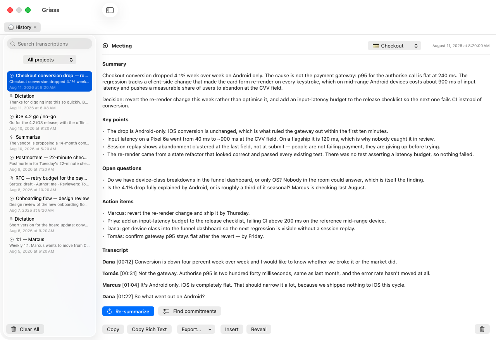

Griasa
Dictation, meeting transcripts, and AI capture actions — running on your Mac, with your AI keys or fully offline. Free, and no subscription to anything.
$29 makes my day — but any amount does. The app is free either way, and nothing is locked behind the money.

macOS 14+ · Apple silicon & Intel · signed & notarized

Everything the subscription apps do — in one menu-bar app
🎤 Hold-to-talk dictation
Hold a key, speak, release — polished text appears in any app. Local Whisper transcription with AI cleanup that keeps your language, fixes punctuation, and handles mixed-language speech (tech terms stay in English).
📼 Meeting recorder
Captures your mic and everything the Mac plays — Zoom, Meet, Slack huddles, anything. You get a clean Markdown transcript with speakers, summary, and action items. Take timestamped notes live; they're woven into the summary.
⏰ Remind me — anywhere
Select text or drag a rectangle over any app, hit a hotkey, and AI turns it into an Apple Reminder with the right date, a link back to the source, and a screenshot clip.
📋 Capture actions
OCR any region of the screen, run AI presets on selected text or clipboard (translate, rewrite, summarize), or draft a reply from the visible chat thread — system-wide hotkeys, works in every app.
✨ AI snippets — type ;tldr anywhere
Text expansion with an AI inside. ;tldr summarizes whatever you copied, ;en translates it, ;meet proposes your next free calendar slot with your room link — expanded in place, in any app, in any text field. Write your own: {ai: …} takes any instruction and can see your clipboard, date, and calendar.
🗂 Projects & history
Everything you capture is auto-filed into projects as plain Markdown on disk. Ask questions about a project and get answers grounded in its notes.
🤖 Your choice of AI
Anthropic, OpenAI, Google Gemini — fully local via Ollama / LM Studio — or no API key at all: Griasa can answer through the Claude Code or Codex CLI using the subscription you already pay for. No middleman server, ever.
Advanced AI — on your terms
- The smart parts are real AI — meeting notes with action items, a commitments tracker, per-person dossiers, PRD/RFC drafts, AI snippets. You bring the brain: Anthropic, OpenAI, Gemini, a local model via Ollama / LM Studio — or your existing Claude Pro / ChatGPT subscription through their CLIs, no API key needed.
- Audio never leaves your Mac. Transcription is local Whisper (whisper.cpp). There is no Griasa server and no account.
- Text goes only to the AI provider you configure — or nowhere at all with a local model. If a local model fails, Griasa asks before ever sending anything to a cloud key.
- Open source. Every permission the app asks for (microphone, screen recording, accessibility) is auditable in the code — and each one explains what still works if you decline it. Even the strictest “no cloud recorders” IT policy has a compliant mode: local Whisper + local LLM.
Compare
| Griasa | Typical cloud stack | |
|---|---|---|
| Dictation | ✓ local Whisper | $12–15/mo, cloud |
| Meeting notes | ✓ included | $10–18/mo, bot joins your call |
| Screen capture → reminder / OCR / AI | ✓ included | separate apps |
| Where audio is processed | your Mac | vendor cloud |
| Price | free — pay what you like | $250–400 / year |
What it costs
Download it
Free signed & notarized
The built app, ready to run: universal binary, Apple's notarization ticket stapled on, opens with a double-click. Nothing is held back and there is no licence check — there could not be a meaningful one under this licence anyway.
Support it, if it earns it
$29? or anything at all
Use it for a week first. If it saved you time, $29 would make my day — but any amount does, and none is fine too. This pays for the Apple developer account and the hours, not for access you already have.
Or build it yourself
Free GPL-3.0
Clone the repo, run ./build.sh, own every line. Same app, minus the toolchain setup.
FAQ
Does it work offline?
Yes — dictation always (Whisper runs locally), and every AI feature too if you point Griasa at Ollama or LM Studio. With a cloud key, only the text of the specific request is sent to that provider.
Which languages?
Everything Whisper supports (~100 languages), including mixed-language speech — dictate in your language with English tech terms and both come out right.
Why does it need microphone / screen recording / accessibility permissions?
Microphone for dictation, screen recording for meeting audio and region capture, accessibility for reading selected text and typing results into other apps. Each is optional — the app tells you exactly what stops working if you decline. It's all in the source.
Do I need an AI subscription?
No subscription to Griasa, ever. You bring an API key (Anthropic / OpenAI / Gemini — pay-per-use, typically cents per day) or run free local models with Ollama.
What do I get for the $29 that I don't get for free?
Nothing, and that's deliberate. The download is the same app either way — no locked features, no licence check, and under GPL-3.0 there could not be a meaningful one: anyone with the source may legally remove such a check and share the result. The money pays for the Apple developer account and the hours, so if the app hasn't earned it yet, don't send any.
Which puts Griasa squarely in the WinRAR tradition: the trial never ends, the reminder stays polite, and the thing keeps working forever whether or not you ever pay. WinRAR reportedly does perfectly well on that arrangement, which leaves the question nobody has answered in thirty years — who are the people who actually pay? You could be one of them.
Refunds?
Just ask and it's returned, no questions. Since nothing is gated behind the payment, you keep using the app either way.